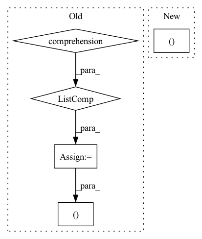

Pattern ID :172
Before Change
hidden = self.init_hidden(x.shape[-2:], x.shape[:-3])
hs = [hidden[0][i] for i in range(self.num_layers)]
cs = [hidden[1][i] for i in range(self.num_layers)]
for _ in range(num_repeats):
for i, block in enumerate(self.blocks):
hs[i], cs[i] = block(x, (hs[i], cs[i]))
return hs[-1], (torch.stack(hs), torch.stack(cs) )
// simple modelAfter Change
for i, block in enumerate(self.blocks):
hs[i], cs[i] = block(x, (hs[i], cs[i]))
return hs[-1], (hs, cs )
// simple modelIn pattern: SUPERPATTERN
Frequency: 3
Non-data size: 5
Instances Fragment ID: 721258
Project Name: dena/handyrl
Commit Name: f0fa9d91bc830bf06ce1085da48f0a164d32c1df
Time: 2020-12-12
Author: a.a.b.a.b.c.a.b.c.d.abcd1234@gmail.com
File Name: model.py
M Class Name: DRC
N Class Name: DRC
M Method Name: forward(4)
N Method Name: forward(4)
M Parent Class: nn.Module
N Parent Class: nn.Module
M File Name: model.py
N File Name: model.py
M Start Line: 218
M End Line: 226
N Start Line: 218
N End Line: 225
Before Change
m, x_rnn, _ = self.erb_stage(feat_erb)
spec = self.mask(spec, m, atten_lim) // [B, 1, T, F, 2]
lsnr, _ = self.lsnr_net(x_rnn)
out_specs = [spec.squeeze(1).clone() for _ in range(len(self.refinement_stages) + 1)]
// re/im into channel axis
spec_f = (
spec.squeeze(1)[:, :, : self.df_bins].permute(0, 3, 1, 2).clone()
) // [B, 2, T, F_df]
h_conv: Optional[Tensor] = None
for i, (stage, _) in enumerate(zip(self.refinement_stages, self.refinement_snr_max)):
refinement, h_conv, _ = stage(self.cplx_comp(spec_f), h_conv)
spec_f = spec_f + refinement
out_specs[i + 1][..., : self.df_bins, :] = spec_f.permute(0, 2, 3, 1)
spec[..., : self.df_bins, :] = spec_f.unsqueeze(-1).transpose(1, -1)
return spec, m, lsnr, out_specs
def init_model(df_state: Optional[DF] = None, run_df: bool = True, train_mask: bool = True):
assert run_df and train_maskAfter Change
r, _, _ = self.refinement_stage(self.cplx_comp(spec_f))
spec_f = self.refinement_op(spec_f, r)
spec[..., : self.df_bins, :] = spec_f.unsqueeze(-1).transpose(1, -1)
return spec, m, lsnr, None
def init_model(df_state: Optional[DF] = None, run_df: bool = True, train_mask: bool = True):
assert run_df and train_mask Fragment ID: 721257
Project Name: rikorose/deepfilternet
Commit Name: 946b362aa406f8a1808a252393351d0e7523130a
Time: 2022-04-12
Author: h.schroeter@pm.me
File Name: DeepFilterNet/df/multistagenet.py
M Class Name: MSNet
N Class Name: MSNet
M Method Name: forward(3)
N Method Name: forward(3)
M Parent Class: nn.Module
N Parent Class: nn.Module
M File Name: DeepFilterNet/df/multistagenet.py
N File Name: DeepFilterNet/df/multistagenet.py
M Start Line: 534
M End Line: 547
N Start Line: 504
N End Line: 510
Before Change
v_img = rearrange(v_img, "B h (H W) Ch -> B (h Ch) H W", H=H, W=W) // Shape: [B, h, H*W, Ch] -> [B, h*Ch, H, W].
v_img_list = torch.split(v_img, self.channel_splits, dim=1) // Split according to channels.
conv_v_img_list = [conv(x) for conv, x in zip(self.conv_list, v_img_list)]
conv_v_img = torch.cat(conv_v_img_list, dim=1)
conv_v_img = rearrange(conv_v_img, "B (h Ch) H W -> B h (H W) Ch", h=h) // Shape: [B, h*Ch, H, W] -> [B, h, H*W, Ch].
EV_hat_img = q_img * conv_v_img
zero = torch.zeros((B, h, 1, Ch), dtype=q.dtype, layout=q.layout, device=q.device)
EV_hat = torch.cat((zero, EV_hat_img ), dim=2) // Shape: [B, h, N, Ch].
return EV_hat
After Change
conv_v_img = conv_v_img.reshape(B, h, Ch, H * W).transpose(-1, -2)
EV_hat = q_img * conv_v_img
EV_hat = F.pad(EV_hat, (0, 0, 1, 0, 0, 0 )) // [B, h, N, Ch].
return EV_hat
Fragment ID: 721261
Project Name: feng-lab/pytorch-image-models
Commit Name: 76739a7589ebde1fc6b015e5f9f3e2dc8a73299e
Time: 2021-04-28
Author: rwightman@gmail.com
File Name: timm/models/coat.py
M Class Name: ConvRelPosEnc
N Class Name: ConvRelPosEnc
M Method Name: forward(4)
N Method Name: forward(4)
M Parent Class: nn.Module
N Parent Class: nn.Module
M File Name: timm/models/coat.py
N File Name: timm/models/coat.py
M Start Line: 96
M End Line: 113
N Start Line: 119
N End Line: 137